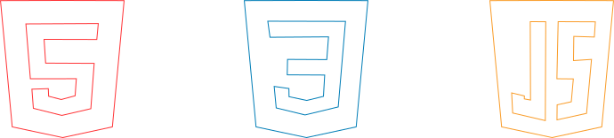

Este é um projeto de portfólio desenvolvido por @wendel_yin, baseado em uma das maiores competições esportivas existentes.
Em "Bolões", você pode dar seus palpites quanto aos jogos do Grupo C, composto por Brasil, Marrocos, Haiti e Escócia.
Os resultados serão salvos, registrados e poderão ser visualizados em "Perfil" após o fim de cada jogo.
Na página "Perfil", ao lado de "Meu perfil", estará o teu "rank" (que vai de bronze a ouro).
Palpite corretamente os jogos disponíveis para eventualmente subir de "rank".
